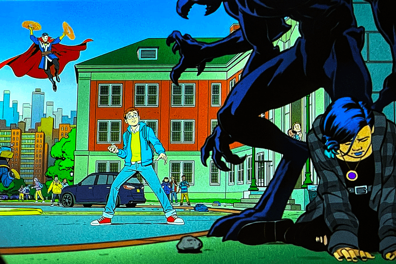

Date de sortie : Janvier 2025
Créateurs : Jeff Trammell
Genre : Animation, Action, Super-héros
Note globale : 4/5
Une série animée captivante qui réinvente l'histoire de Spider-Man avec une approche originale et un développement de personnages exceptionnel.
⚠️ Attention : Cette critique contient des spoilers sur la série Friendly Neighborhood Spider-Man. ⚠️
Introduction
Et si l'histoire de Spider-Man que nous connaissons tous était radicalement différente ? C'est le pari audacieux de "Friendly Neighborhood Spider-Man", la série animée qui a secoué les codes du genre depuis sa sortie en janvier 2025. Imaginez un Peter Parker sans pouvoirs, un lycéen ordinaire de Midtown, propulsé dans une aventure extraordinaire après une rencontre inattendue avec le surnaturel. Préparez-vous à être surpris, car cette série ne ressemble à aucune autre adaptation de l'Homme-Araignée.
Présentation de la série
Créée par Jeff Trammell, "Friendly Neighborhood Spider-Man" nous transporte dans un univers parallèle captivant du MCU. Ici, les accords de Sokovie et les conséquences de la Guerre Civile ont profondément altéré le paysage super-héroïque. Peter Parker, dans une interprétation vocale nuancée et convaincante par Hudson Thames, est un lycéen brillant et attachant. Sa vie prend un tournant décisif lors d'une attaque énigmatique sur son établissement scolaire. Le Dr. Strange, dont la voix est magistralement incarnée par Robin Atkin Downes, surgit d'un portail dimensionnel pour affronter une menace symbiotique. Cependant, c'est une araignée, surgie de ce même portail, qui va radicalement transformer le destin de Peter.
Un début original et captivant
La série démarre sur les chapeaux de roues : une attaque au lycée, l'apparition du Dr Strange, un monstre symbiotique, et une lycéenne, Nico Minoru, en danger. Peter, sans pouvoirs, tente de la secourir, mais c'est le Dr Strange qui le sauve in extremis. Une araignée, venue du portail dimensionnel, pique Peter, le rendant inconscient et lui conférant des super-pouvoirs. Spider-Man est né ! Cette approche inédite, où Peter est mordu par une araignée venue d'un futur combat, offre une relecture originale du mythe de l'Homme-Araignée.
Un développement des personnages exceptionnel
La série brille par son développement des personnages. Lonnie Lincoln, star du football, se retrouve dans un gang de rue et devient Tombstone, le roi des gangs. Norman Osborn, mentor de Peter, utilise Spider-Man à ses fins et prépare son rôle de Bouffon Vert. Nico Minoru, magicienne malgré elle, se sent perdue. Harry Osborn, fils riche et naïf, apporte une touche d'humour. Le Doctor Octopus, savant reclus, fournit des armes aux bandits. Et Peter Parker, magnifique et attachant, est le Spider-Man parfait : bon, sage, et humain.
Les costumes de Spider-Man : un festival visuel
La série nous offre un véritable défilé de costumes pour Spider-Man, certains sublimes, d'autres plus discutables. Voici mon top 5 des meilleurs :
- Le costume Accurate (Rouge et Bleu) : Le plus beau costume que Spider-Man ait jamais porté, un classique indémodable.
- Le costume Oscorp Suit (Blanc) : Un design élégant et futuriste.
- Le costume Nova : Un look original et coloré, qui sort de l'ordinaire.
- Le costume tout noir (Black Spider) : Un style sombre et mystérieux.
- Le costume Papillon : Un design audacieux et unique.
Le costume Accurate et l'Oscorp Suit se disputent la première place dans mon cœur. Ils incarnent à merveille l'esprit de Spider-Man.

Des moments clés mémorables
La transformation de Lonnie Lincoln en Tombstone, l'apparition du planeur de Norman Osborn, les pouvoirs magiques de Nico Minoru, la révélation de l'origine de l'araignée, le combat épique contre Scorpion, sauvé par Norman Osborn, et la scène où Peter, inspiré par les mots de Norman, apprend à maîtriser ses pouvoirs. Sans oublier le dialogue final avec le Dr Strange, où le Watcher apparaît, semant le doute sur l'avenir de Spider-Man.
Une série qui marque les esprits
"Friendly Neighborhood Spider-Man" est une série qui renouvelle le genre. Son scénario original, son développement des personnages, ses scènes d'action dynamiques, et ses révélations surprenantes en font une œuvre marquante. Les scènes post-générique, avec le père de Peter en prison, le symbiote détenu par Norman, et le projet de Peter et Harry, ouvrent des perspectives passionnantes pour la saison 2. L'animation, inspirée du style de Steve Ditko, est un hommage réussi au co-créateur de Spider-Man.
Conclusion
"Friendly Neighborhood Spider-Man" est une série exceptionnelle qui ravira les fans de l'Homme-Araignée. Malgré quelques imperfections dans l'animation, la série frôle la perfection. Avec une saison 2 en développement et une saison 3 en discussion, l'avenir de Spider-Man dans cet univers parallèle s'annonce radieux.
Regardez la bande-annonce :
Vous pouvez retrouver la bande-annonce en cliquant juste ici : Voir La Bande-Annonce